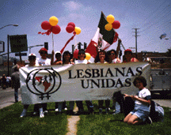
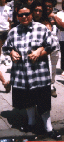

| HOME | SITE MAP |

1996 Gay Pride Parade
Lesbianas Unidas seeks to be a grassroots organization that empowers Latina lesbians. LU shall promote a unique culture that honors our diversity and creates a sense of community by preserving our unique herstory, honoring our accomplishmnets and organizing educational and other projects that build pride. LU shall engage in political advocacy on issues that affect our communities and shall promote projects and undertake actions that make us visible to the general public. Moreover, LU is committed to struggle against racism, sexism, classism, ageism, homophobia, biphobia and all other forms of oppression. Our strength lies in the unity we foster by honoring the richness of our diversity.
LU was formed in 1984 as a committee of Gay and Lesbian Latinos Unidos (GLLU) which was founded in 1981. "Lesbianas Unidas was initially formed to serve as a support group and to address the specific needs of politicized, feminist Latina lesbians..." From an initial membership of five women, LU has grown, and now has a mailing list of 500. Over the years LU has struggled with the needs of members who want it to be a political organization versus those who want it to be primarily a social group. Over the years LU has done both. LU has sponsored an annual retreat since 1984; marched in the 20th Anniversary of the Chicano Moratorium March (1990); worked with Connexxus Women's Center/Centro de Mujeres Latina Outreach Program; attended the Lesbians of Color National Conference in 1983. LU participates in the Dia de La Mujer/International Women's Day annual celebration and the Latina Lesbian Encuentros. In 1994 LU separated from GLLU and became an independent group. LU members continue to work on behalf of many causas and invite hermanas to join us.
LU has just received a grant from LLEGO for a pilot project that will begin to gather the history of Latina Lesbians in Los Angeles. Ten lesbianas who lived in the LA area before Stonewall (1969) and ten who were active in the LA lesbian movement between 1969-1979 will be individually interviewed on videotape. In the fall of 1997, the project hosted a 1 day community forum. The program included clips from the interviews, information on doing oral history interviews and a dialogo between veteranas and those attending. The intent is to gather information about the life and political activities of Latina Lesbians. This is one step toward filling in the gaps about our history and providing role models for other generations. The project is being done in collaboration with Lapis (at the Alcoholism Center for Women) and The Lesbian Legacy Collection (ONE Institute/International Gay and Lesbian Archives). We are looking for any women who may have been politically active on behalf of lesbian rights before 1969, as well as information about clubs, groups, etc. for Latina lesbians in the LA area before the 1970's.If you want to participate in or help with this project, please contact us at: retter@calvin.usc.edu or Bridget at 213-381-8500.

1997 Gay Pride Parade
* Gloria Anzaldua
poem
* Rebecca Sevilla - Peruana at Beijing Conference
click
* Sheila Ortiz papers at UCSB
click
* Sor Juana Inez de La Cruz
click
* LLEGO (Latina/o Lesbian and Gay Organization)
click
* ALLGO (Austin Latino/a Gay and Lesbian Organization)
click
This web site was created by the Lesbian Legacy Collection of the ONE/International Gay and Lesbian Archives as a community service. Link